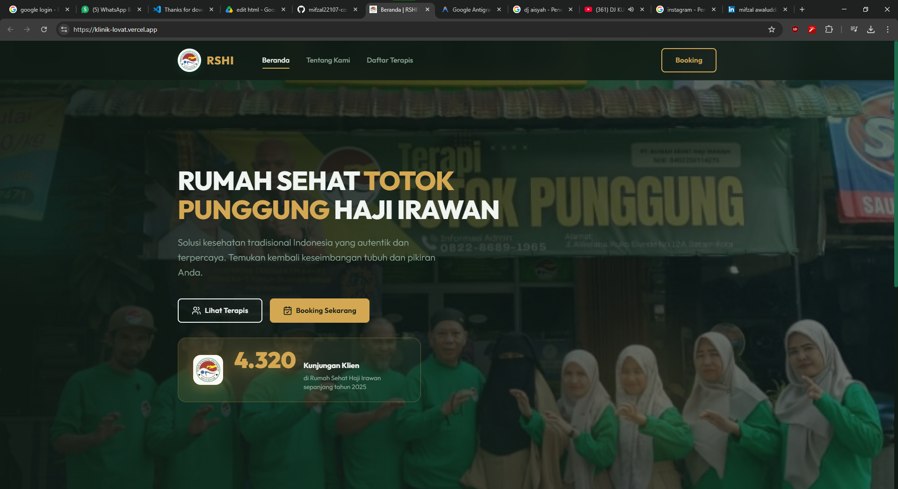

Rumah Sehat Haji Irawan
Platform company profile yang menyediakan informasi mengenai klinik haji irawan.
beberapa proyek Web Development & Karya saya yang pernah saya lakukan.

Platform company profile yang menyediakan informasi mengenai klinik haji irawan.